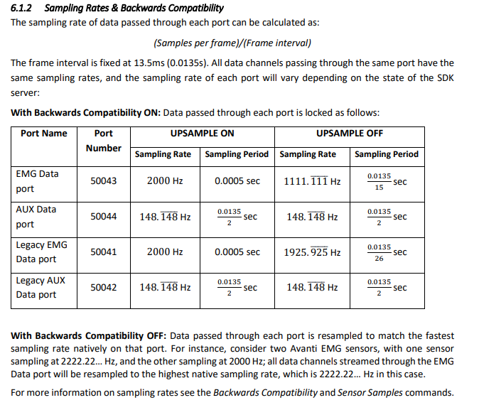

![[Main Page]](../../rsrc/bci2000logo.svg)
DelsysTrignoAvanti
Contributions
Synopsis
The Delsys Trigno Avanti acquisition module enables to read signal from the Delsys Trigno Wireless acquisition hardware through the Trigno Control Server.
Location
http://www.bci2000.org/svn/trunk/src/contrib/SignalSource/DelsysTrignoAvanti
Versioning
Author
Lorenzo Lombardi (l.lombardi@wustl.edu)
credits also to Juergen Muller and Nicholas Luczak.
Version History
- V1.0 -- Initial release
Source Code Revisions
- Initial development: 6972
- Tested under: 6972
- Known to compile under: 6972
- Broken since: N/A
Functional Description
The Delsys Trigno Avanti source module is used to acquire EMG, IMU and other sensors belonging to the Trigno Wireless class from Delsys Systems. The full list of sensors supported can be found in the SDK User Guide [1]. The Avanti sensor is one such instance, which was originally developed and tested for. This documentation explains the parameterization and specifics on how to set up the system.
System Setup
- Download the server indicated as 'Trigno Software Development Kit (SDK) Server' from the Delsys website under support/software [2].
- Run and install all components. This should install an app called Trigno Control Utility to run the server. Do not run it yet.
- Physically connect to the Trigno Control Box using the USB provided by the manufacturer. For more details, refer to the trigno wireless biofeedback user guide [3]
- Check you have the drivers installed: On windows for instance, you can go to Device Manager and look up USBXpressDevice. If you don't find the device, you should see a device called DelsysTrigno with a yellow alert sign. If that's the case, update its drivers manually. You can find them at C:\Program Files (x86)\Delsys, Inc\TrignoSDK\Drivers.
- Make sure that in your network the following IPs/ports are not occupied yourip:50040-43. The source code assumes these ports will be used. On windows, you can run a powershell and use the command: netstat -p tcp -a to get a full list of tcp ports in your system.
- Run the Trigno Control Utility. A window should pop up with all sensors greyed out.
- Pair the sensors of interest using the magnetic pairing system in the Delsys Trigno Box. You should see the icons turning green on the Trigno Control Utility. For more details, refer to [4]
- Leave the server running. It has to be running for the source to work.
- Build the source module if necessary.
- Create a new .bat file that uses the DelsysTrignoAvanti as a source. You can find a template in the amplifiers category.
Windows
This source was tested with Windows 10.
Linux
The source was not tested under Linux OS.
MacOS
The source was not tested under MacOS.
Parameters
The following parameters are available for configuring the DelsysTrignoAvanti source module. You will find these parameters in the Source -- Signal Properties section.
ServerAddress
String with the Ip address of the machine running the Trigno Control Utility. Acceptable values are "localhost" or IPv4 dotted notation "192.120.0.1" (without the quotes).
SourceCh
Integer containing the number of channels to read. Note that each sensor has 10 channels, so the total number of channels is 10 times the number of sensors. Within the source, EMG and non-EMG (e.g. IMU) channels are concatenated and upsampled to the EMG sampling rate. The content of channel depends on the mode (see later) as described in the SDK User Guide [5] Example: a system with 16 Avanti sensors in Mode 67, has 16 sensors * 10 channels/sensor = 160 channels. For each sensor, only 5 will actually contain data, respectively EMG, QuaterionW, QuaternionX, QuaternionY and Quaternion Z. The other channels will be all zeros.
{kind=link}
{kind=link}
ChannelNames
List of strings containing the name of each channel for reference. Example: EMG1, EMG2, ... ,EMG16, IMU1 , IMU2, ... ,IMU144.
SensorMode
This is probably the key parameter to set. List of integers, one per sensor, to set the mode of the sensor from the SDK user guide [6]. It defines sampling rate and content of each channel for the sensor. Example: 67, 67, ... ,67. To set each sensor to mode 67. From the SDK User guide [7], this corresponds to EMG (1482Hz) plus Orientation (74Hz, 32bits).
SensorIsRequired
List of booleans to indicate which sensor we will actually be using from the total pool. Example 0 0 1 0 0 0 0 0 0 0 0 0 0 0 0 0 to use only sensor 3 from the full set of 16.
MuscleNames
List of strings containing the name of the muscles the sensor is fitted to. This parameter is purely for offline use, and has no effect on the source module operations. Example: Left Rectus Femoris, Left Vastus Lateralis, ..., Right Tibilialis Anterior.
SegmentNames
List of strings containing the name of the segments the sensor is fitted to. This parameter is purely for offline use, and has no effect on the source module operations. Example: Left Leg, Left Leg, ..., Right Shank.
SampleBlockSize
This is the other key parameter to set up. It defines how many samples will be acquired. There are a number of possible choices, but they have to respect the following constraint: because the sensor might have channels with different rates, we need to choose a block size that will contain an integer number of samples for all channels. You should also make sure that a block should take longer than 13.5ms, so the product of SampleBlockSize and sampling frequency should be larger then 13.5ms. Performance around 30-50ms is typically stable. Example: in mode 67, EMGs are sampled at 1482 and IMUs are sampled at 74Hz. This implies that the block size should be an integer multiple of 1482/74 = 20.
SamplingRate
The sampling rate is not editable in this module, left as auto. The sensor mode is actually used to configure the sampling rate. A sampling rate can be shown purely for quick reference. Example: auto
SourceChOffset/SourceChGain
These are populated automatically. Use 'auto' to configure this parameter. Example: auto
BackwardsCompatibility
This parameter can be used to force a fixed sampling rate of 2000Hz for EMG. This is a legacy mode for the wireless sensors. For more information  Example: auto
{kind=link}
Upsampling
This parameter can be used to force upsampling when in backwards compatibility mode. This is a legacy mode for the wireless sensors. For more information Example: auto
ImuSamplingRate
Again, the sampling rate is not editable in this module, left as auto. The sensor mode is actually used to configure the sampling rate. A sampling rate can be shown purely for quick reference. Example: auto
Streams
ErrorStream
This stream records the error flag returned during block reading. The meaning of each error is stored into a table from TRIGNOSDK_ERROR enum. OF these, most likely only errors (11) TRIGNOSDK_TIMEOUT_READ_EMG_FAIL, (12) TRIGNOSDK_TIMEOUT_READ_IMU_FAIL and (13) TRIGNOSDK_TIMEOUT_READ_BOTH_FAIL are expected to occurr during a run. These are non-blocking errors.
| Value | Error name | Possible reasons |
|---|---|---|
| 11 | TRIGNOSDK_TIMEOUT_READ_EMG_FAIL | EMG port timed-out |
| 12 | TRIGNOSDK_TIMEOUT_READ_IMU_FAIL | non-EMG port timed-out |
| 13 | TRIGNOSDK_TIMEOUT_READ_BOTH_FAIL | Both EMG and non-EMG ports timed-out |
The first 10 values are reserved for setup errors, which will not appear in the stream. For more info, refer to the Doxygen documentation in the source code.
Known Issues
Note the the server has to be running alongside BCI2000 for the source module to work. However, it does not need to be running physically on the same machine, since a static ip address can be provided. A known issue of the current implementation of the source is that the communication is slower and less stable when running the server and the source in different machines, so we recommend whenever possible to opt for a solution with the server and bci2000 running on the same physical machine (and therefore use localhost ip address). So far, never tested using IPv6 server addresses.
Troubleshooting
- Double check drivers. It has happened in the past that, after some updates, the drivers would automatically switch from 64 to 32 bit version or viceversa. Make sure that the version is correct.
- Double check Trigno Control Utility is on.
- Once the Trigno Control Utility is running, you should see that ports 50040-43 are now in listening mode.
General TCP debugging: Wireshark can be useful to double check the low level TCP communication occurs as expected. Use the following filter: tcp.port == 50040 or tcp.port == 50043 or tcp.port == 50044. For coding issues, the module comes with a Doxygen file that explains each function in more detail.
Example param file
Below an example of param file for a system with 16 Trigno Avanti sensors of which 13 are used in mode 67 (EMG + IMU with 32bit, quaternion representation):
Source:Signal%20Properties int SourceCh= 160 // number of digitized and stored channels (allow_override) Source:Signal%20Properties int SampleBlockSize= 60 // number of samples transmitted at a time (allow_override) Source:Signal%20Properties int SamplingRate= 1482 // sampling rate (allow_override) Source:Signal%20Properties list ChannelNames= 160 Emg1 Emg2 Emg3 Emg4 Emg5 Emg6 Emg7 Emg8 Emg9 Emg10 Emg11 Emg12 Emg13 Emg14 Emg15 Emg16 IMU1 IMU2 IMU3 IMU4 IMU5 IMU6 IMU7 IMU8 IMU9 IMU10 IMU11 IMU12 IMU13 IMU14 IMU15 IMU16 IMU17 IMU18 IMU19 IMU20 IMU21 IMU22 IMU23 IMU24 IMU25 IMU26 IMU27 IMU28 IMU29 IMU30 IMU31 IMU32 IMU33 IMU34 IMU35 IMU36 IMU37 IMU38 IMU39 IMU40 IMU41 IMU42 IMU43 IMU44 IMU45 IMU46 IMU47 IMU48 IMU49 IMU50 IMU51 IMU52 IMU53 IMU54 IMU55 IMU56 IMU57 IMU58 IMU59 IMU60 IMU61 IMU62 IMU63 IMU64 IMU65 IMU66 IMU67 IMU68 IMU69 IMU70 IMU71 IMU72 IMU73 IMU74 IMU75 IMU76 IMU77 IMU78 IMU79 IMU80 IMU81 IMU82 IMU83 IMU84 IMU85 IMU86 IMU87 IMU88 IMU89 IMU90 IMU91 IMU92 IMU93 IMU94 IMU95 IMU96 IMU97 IMU98 IMU99 IMU100 IMU101 IMU102 IMU103 IMU104 IMU105 IMU106 IMU107 IMU108 IMU109 IMU110 IMU111 IMU112 IMU113 IMU114 IMU115 IMU116 IMU117 IMU118 IMU119 IMU120 IMU121 IMU122 IMU123 IMU124 IMU125 IMU126 IMU127 IMU128 IMU129 IMU130 IMU131 IMU132 IMU133 IMU134 IMU135 IMU136 IMU137 IMU138 IMU139 IMU140 IMU141 IMU142 IMU143 IMU144 // list of channel names (allow_override) Source:Signal%20Properties list SourceChOffset= 160 0 0 0 0 0 0 0 0 0 0 0 0 0 0 0 0 0 0 0 0 0 0 0 0 0 0 0 0 0 0 0 0 0 0 0 0 0 0 0 0 0 0 0 0 0 0 0 0 0 0 0 0 0 0 0 0 0 0 0 0 0 0 0 0 0 0 0 0 0 0 0 0 0 0 0 0 0 0 0 0 0 0 0 0 0 0 0 0 0 0 0 0 0 0 0 0 0 0 0 0 0 0 0 0 0 0 0 0 0 0 0 0 0 0 0 0 0 0 0 0 0 0 0 0 0 0 0 0 0 0 0 0 0 0 0 0 0 0 0 0 0 0 0 0 0 0 0 0 0 0 0 0 0 0 0 0 0 0 0 0 // Offset for channels in A/D units (allow_override)
Source:Signal%20Properties list SourceChGain= 160 1 1 1 1 1 1 1 1 1 1 1 1 1 1 1 1 1 1 1 1 1 1 1 1 1 1 1 1 1 1 1 1 1 1 1 1 1 1 1 1 1 1 1 1 1 1 1 1 1 1 1 1 1 1 1 1 1 1 1 1 1 1 1 1 1 1 1 1 1 1 1 1 1 1 1 1 1 1 1 1 1 1 1 1 1 1 1 1 1 1 1 1 1 1 1 1 1 1 1 1 1 1 1 1 1 1 1 1 1 1 1 1 1 1 1 1 1 1 1 1 1 1 1 1 1 1 1 1 1 1 1 1 1 1 1 1 1 1 1 1 1 1 1 1 1 1 1 1 1 1 1 1 1 1 1 1 1 1 1 1 // gain for each channel (A/D units per physical unit) (allow_override)
Source:Signal%20Properties list SensorMode= 160 67 67 67 67 67 67 67 67 67 67 67 67 67 67 67 67 67 67 67 67 67 67 67 67 67 67 67 67 67 67 67 67 67 67 67 67 67 67 67 67 67 67 67 67 67 67 67 67 67 67 67 67 67 67 67 67 67 67 67 67 67 67 67 67 67 67 67 67 67 67 67 67 67 67 67 67 67 67 67 67 67 67 67 67 67 67 67 67 67 67 67 67 67 67 67 67 67 67 67 67 67 67 67 67 67 67 67 67 67 67 67 67 67 67 67 67 67 67 67 67 67 67 67 67 67 67 67 67 67 67 67 67 67 67 67 67 67 67 67 67 67 67 67 67 67 67 67 67 67 67 67 67 67 67 67 67 67 67 67 67 // mode of the sensor (e.g. 67: 1xEMG (1482Hz) 4xOrientation (74Hz, 32bits)). cfr SDK User Guide
Source:Signal%20Properties list SensorIsRequired= 16 0 0 1 1 1 1 1 1 1 1 1 1 1 1 0 1 // 0 = sensor not used, 1 = sensor is used
Source:Signal%20Properties list MuscleNames= 16 RectusFemorisLx RectusFemorisRx None None SemitendineousLx SemitendineousRx VastusLateralisLx VastusLateralisRx TibialisAnteriorLx TibialisAnteriorRx GastrocemiusLx GastrocemiusRx SoleusLx SoleousRx None Analog // names of muscles the sensor is on. e.g. vastus lateralis
Source:Signal%20Properties list SegmentNames= 16 LegLx LegRx None None ShankLx ShankRx LegLx LegLx ShankLx ShankRx ShankLx ShankRx ShankLx ShankRx None None // names of segment the sensor is placed on. e.g. leg, shank, foot
Source:Signal%20Properties int IMUCh= 144 auto 1 144 // number of digitized and stored channels
Source:Legacy string BackwardCompatibilityMode= NO NO % % // A mode that forces sample rate to fixed values. cfr SDK User Guide
Source:Legacy string Upsampling= OFF OFF % % // A mode that forces sample rate. cfr SDK User Guide